2026.10.25 最新修正：搜索页按新增截图还原历史记录、双列猜你想搜和底部语音入口；分享面板使用浅灰色 #f5f5f5，工具圆底为白色。桌面键盘直接提取截图并支持输入；触屏使用系统键盘。语音AI问答和图片搜索需实际客户端。上一轮发现素材、回复规则保持。
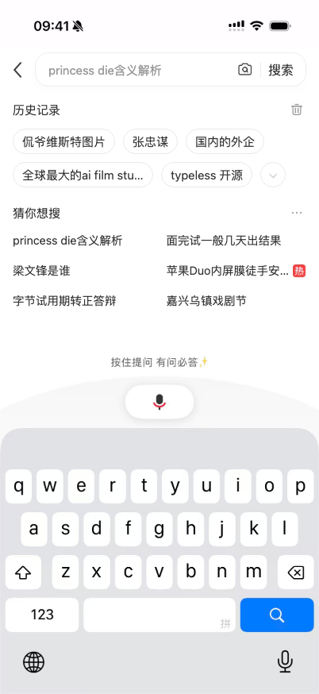
搜索 · 截图结构与本地历史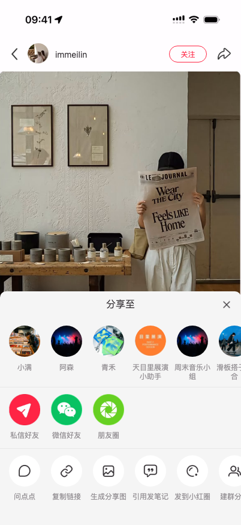
分享 · 浅灰底与白色圆底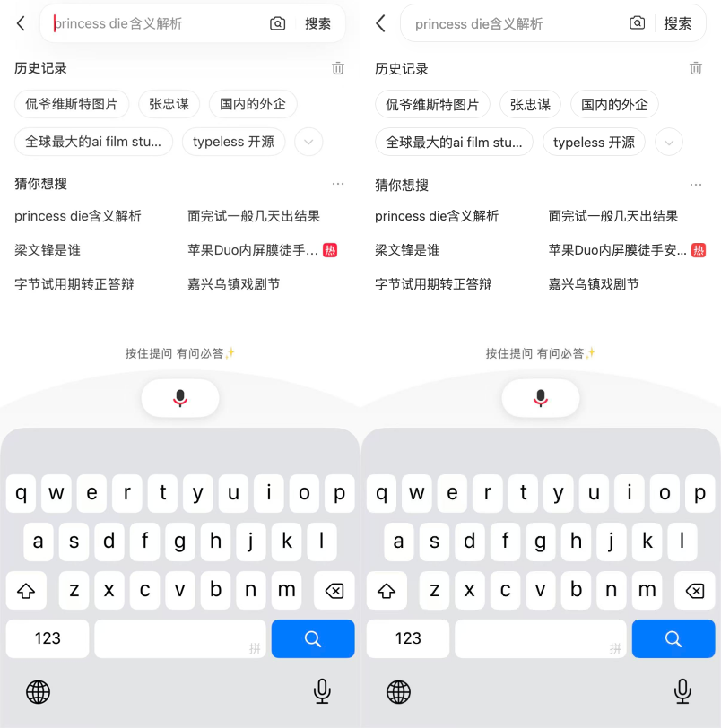
搜索 · 原屏 / 原型对照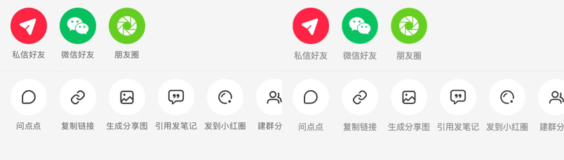
分享 · 原屏 / 原型对照最新37项检查 搜索实测坐标 新增截图与资产来源 完整校准记录
上一轮：发现素材与回复规则
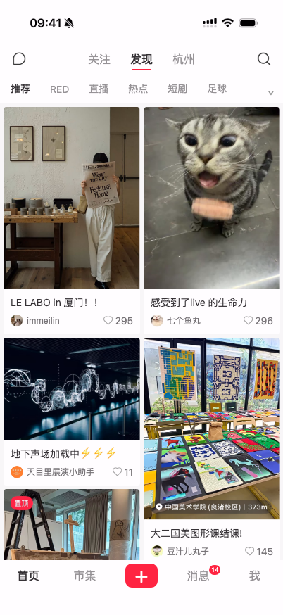
发现 · 保留认可的三篇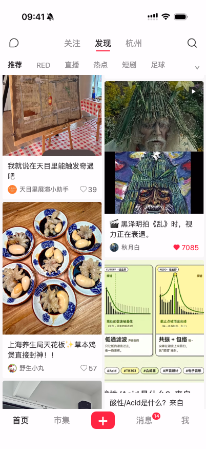
发现 · 真实艺术与城市素材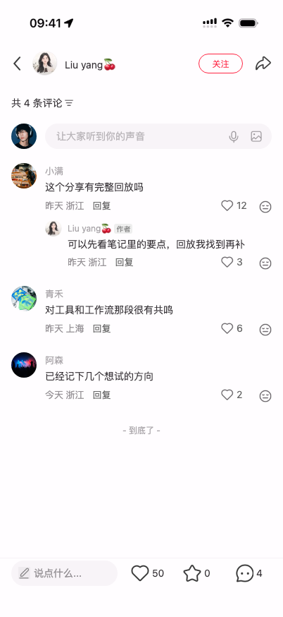
回复 · 少量直接显示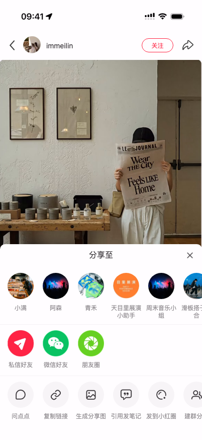
分享 · 浅色面板与控件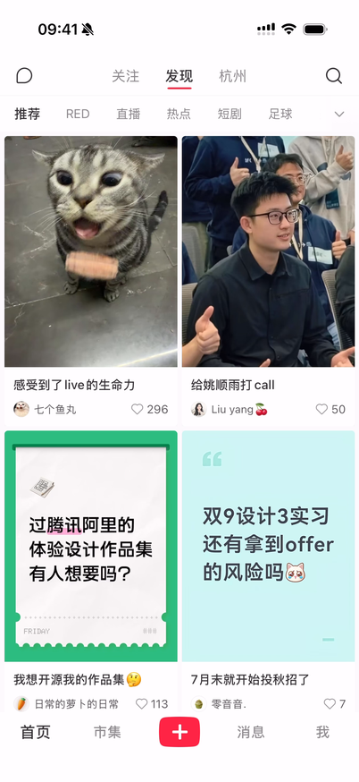
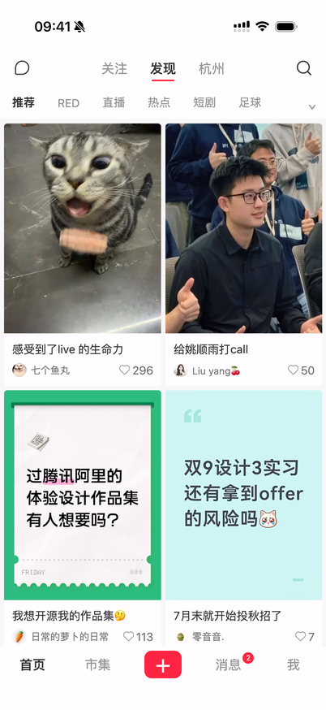
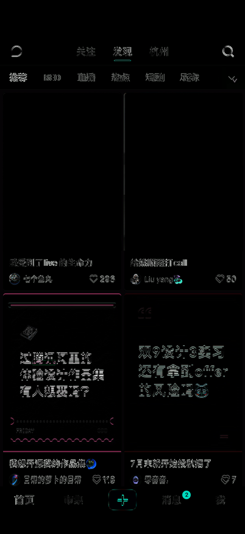
同尺寸对比；先看导航、图片边缘、文字基线和底部互动栏。视频经过 H.264 编码，解码色彩及字体抗锯齿存在误差，不能等同手机无损截图。
缩小预览的接缝 · 修正前 / 后
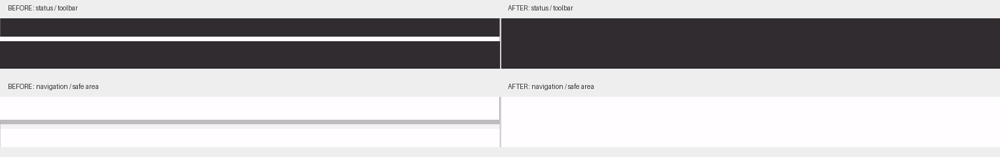
DPR 2、窗口高度 940px；局部按最近邻放大。另检查了 850px 与 1000px 窗口，接缝上下 5 行像素均为连续背景色。
录屏关键帧
补充录制链路：关注 Feed → 多图笔记 → 评论、回复、图片评论 → 点点面板与结果 → 个人主页上下滚动及刷新 → 消息列表 → 赞藏 / 关注 / 评论通知 → 点点历史 → 群聊 / 私聊 → 相册、相机、写文字菜单 → 消息搜索。
原图文使用采集到的三张照片，交互页码为 1/3–3/3。滑板与穿搭示例新增独立照片。猫图和打 call 图仍只有首页裁图来源，本轮裁去卡片边角并校准通用详情布局，未取得两篇完整详情原图。素材处理见 详情素材清单。
个人内容和聊天使用示例数据；视频是示例图片生成的轻微平移片段，未使用用户原视频。点点回答在本地预置，不连接真实 AI 服务。浏览器系统字体、键盘和表情与原生 App 仍有差异。
字体使用 macOS/iOS 系统字体候选，未获取 App 的字体声明。iOS App 版本号未在录屏展示，不能沿用 Android 9.50.0 标签。具体裁切坐标与来源见 资产清单，校准范围见 实施记录。